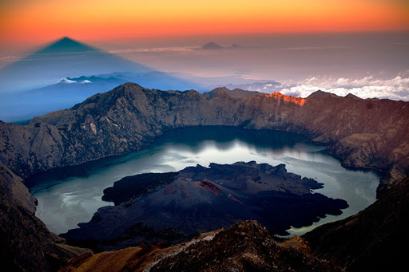
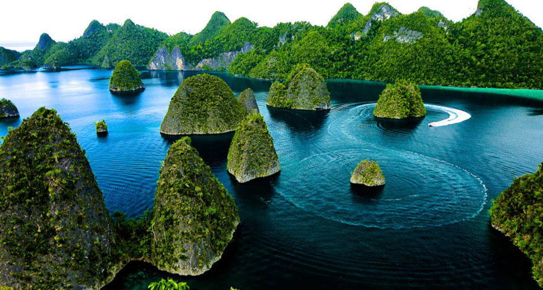
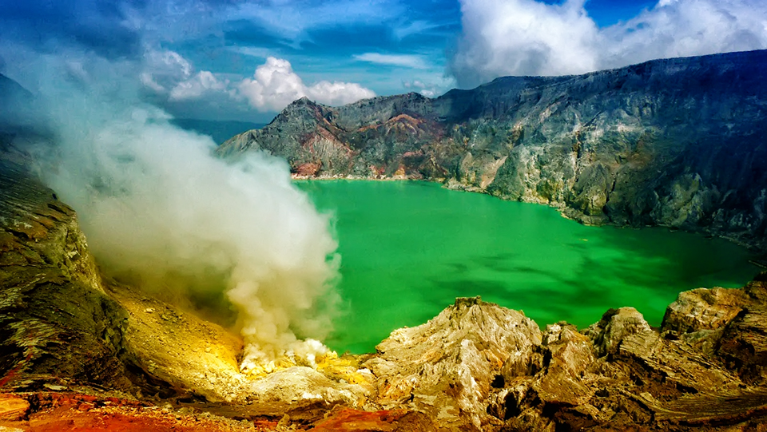
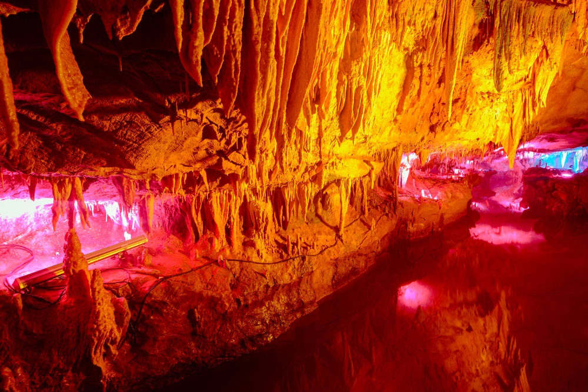
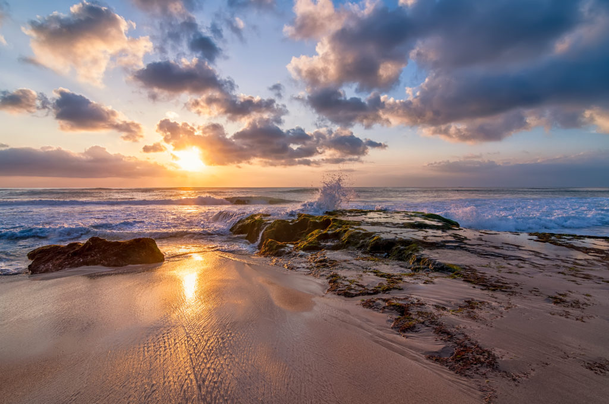
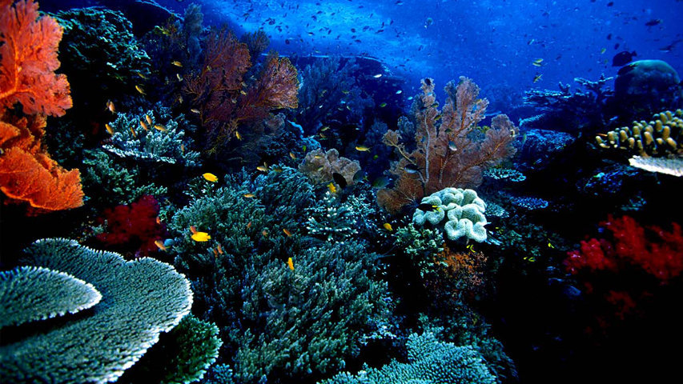

Kekayaan akan sumber daya alamnya merupakan daya tarik tersendiri bagi nerga-negara lain. Tentunya pemandangan dan keindahan alamnya juga banyak dan beragam, mulai dari sabang sampai merauke terdapat keindahan alam yang tersembunyi yang tidak dimiliki oleh negara lain. Maka dari itu cintailah dan rawatlah alam yang kita miliki ini.
Daftar Keindahan Alam di Indonesia
Gunung Rinjani, NTB
Rinjani memiliki panaroma yang bisa dibilang paling bagus di antara gunung-gunung di Indonesia. Setiap tahunnya (Juni-Agustus) banyak dikunjungi pencinta alam mulai dari penduduk lokal, mahasiswa, pecinta alam. Suhu udara rata-rata sekitar 20°C; terendah 12°C. Angin kencang di puncak biasa terjadi di bulan Agustus. Beruntung akhir Juli ini, angin masih cukup lemah dan cuaca cukup cerah, sehingga pendakian ke puncak bisa dilakukan kapan saja.
Kepulauan Raja Ampat, Papua Barat
Kepulauan Raja Ampat merupakan kepulauan yang berada di barat pulau Papua di provinsi Papua Barat, tepatnya di bagian kepala burung Papua. Kepulauan ini merupakan tujuan penyelam-penyelam yang tertarik akan keindahan pemandangan bawah lautnya.
Kawah Ijen, Jawa Timur
Kawah Ijen merupakan salah satu gunung berapi atraksi wisata di Indonesia. Kawah Ijen merupakan objek wisata terkenal, yang telah dikenal oleh para wisatawan domestik dan asing karena keindahan alam dan bahari.
Carstensz Pyramid, Papua

Indonesia patut berbangga dengan keunikan dan kekayaan alam serta tradisi masayarakatnya. Kali ini, Carstenz Pyramid atau yang bisa disebut dengan puncak jaya, juga berada di Papua. Puncak Carstensz ini merupakan puncak tertinggi di Australia dan Oceania.
Goa Gong, Jawa Timur
Goa Gong diklaim sebagai goa terindah di Asia Tenggara. Di dalam gua ini Anda dapat menyaksikan berbagai macam tonjolan batuan (stalaktit/stalakmit) yang sangat menarik dan proses terjadinya secara alami.
green Canyon, Jawa Barat

Green Canyon menyimpan pesona luar biasa. Perpaduan antara sungai, lembah hijau, hutan lindung, dan aneka stalaktit-stalakmit. Keindahan berbalut kesunyian, bagai surga yang tersembunyi. Green Canyon mulai dikembangkan pada tahun 1989.
Pantai Dreamland, Bali
Dreamland atau lebih dikenal sebagai Pantai Dreamland merupakan salah satu pantai terindah di Bali selain Pantai Kuta. Pantai yang terletak tidak jauh dari daerah Uluwatu di Pulau Dewata ini sudah sangat terkenal karena keindahannya. Keindahan dan kebersihan pantai menambah daya tarik pengunjung, bukan hanya dari dalam negeri tapi juga turis manca negara.
Gunung Bromo, Jawa Timur

Gunung Bromo merupakan gunung berapi yang masih aktif dan paling terkenal sebagai obyek wisata di Jawa Timur. Sebagai sebuah obyek wisata, Gunung Bromo menjadi menarik karena statusnya sebagai gunung berapi yang masih aktif.
Taman Laut Bunaken, Sulawesi Utara
Taman laut Bunaken memiliki 20 titik penyelaman (dive spot) dengan kedalaman bervariasi hingga 1.344 meter. Dari 20 titik selam itu, 12 titik selam di antaranya berada di sekitar Pulau Bunaken. Dua belas titik penyelaman inilah yang paling kerap dikunjungi penyelam dan pecinta keindahan pemandangan bawah laut.